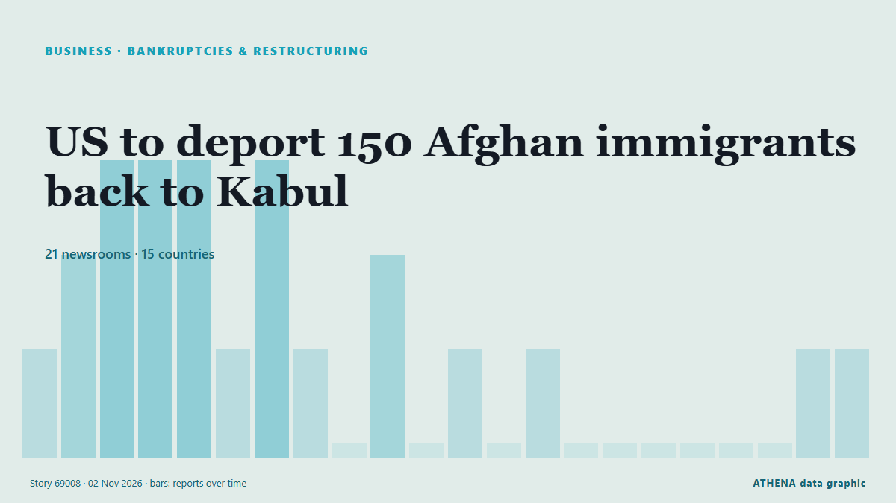

South Asia
South Asia: the latest events country by country, ranked by ATHENA with risk, sources and countries.

BusinessUS to deport 150 Afghan immigrants back to Kabul
WASHINGTON: President Donald Trump’s administration plans to deport more than 150 Afghan immigrants back to Afghanistan via Pakistan, US media reported, a move advocacy groups say could endanger… from Dawn
Photos: Aftermath of deadly Cyclone Arnab in southern India
Chandrababu Naidu instructed district administrations to establish control rooms, issue regular public alerts and coordinate emergency response measures. from NDTV
Tiger Shroff Firing Case Updates: 3 Suspects Undergo Medical Examination In Kota, Transit Remand Granted
Tiger Shroff Firing Case Updates: Tiger Shroff sustained injuries on his shoulder, chest and his right arm. from NDTV
Indian authorities tighten security ahead of big opposition march in Delhi
Protesters are set to demand the resignation of India's election chief over a controversial revision of voter lists. from CNA (Channel NewsAsia)
France intercepts Russian ‘shadow fleet’ tanker in operation off Réunion Island
France’s navy has boarded an oil tanker suspected of helping Russia evade Western sanctions in an operation hundreds of kilometres south of the French Indian Ocean territory of Réunion Island. from RFI English
India helicopter crash in Himalayas kills 6
Police said efforts were under way to recover the bodies from the remote crash site, while the cause of the accident remained unknown. from Free Malaysia Today
UN Refugee Agency Says 9 Million Need Extra Winter Help
The UN refugee agency highlights the need for extra winter assistance for nine million people across Ukraine, Syria, Lebanon, and Afghanistan, seeking $50 million in donations. from Arab News